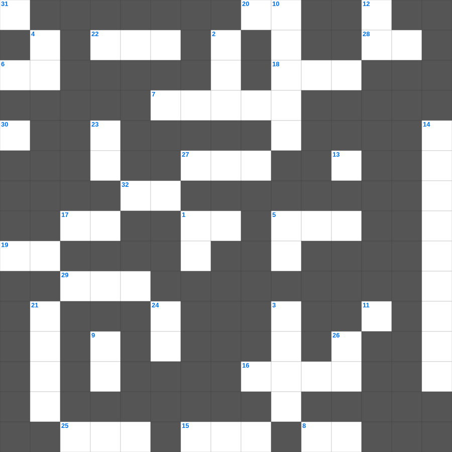

다니엘: 풀무불과 사자굴
📌 서비스 정의
십자가로세로는 교회 주보와 주일학교에서 사용할 수 있는 성경 기반 가로세로 퍼즐 서비스입니다. 성경 인물, 사건, 핵심 구절을 바탕으로 제작되었습니다. 온라인 풀이 및 인쇄 기능을 제공합니다.
무료로 즐기는 다니엘 다니엘 무료 성경퀴즈! 35개의 힌트로 구성된 가로세로 낱말 퍼즐입니다. PC와 모바일 모두 지원되며, 정답을 바로 확인할 수 있어 혼자서도 쉽게 풀 수 있습니다.

📝 가로 힌트
1. 하나님께 예물을 드리는 시간
5. 나아만 장군이 문둥병을 고친 강
5. 나아만 장군이 씻은 강
6. 어려운 이웃을 돕는 일
7. 성도들 간의 사랑의 교제
8. 광야에서 이스라엘이 먹은 하늘 양식
15. 베드로가 고기를 잡던 호수
16. 쉬지 말고 이것하라
17. 내가 누구를 보내며 누가 우리를 위하여 이것할꼬
18. 이사악의 아내
19. 베드로가 감옥에서 천사의 도움으로 나옴
20. 멜리데 섬에서 바울을 문 동물
22. 어린 양의 보좌로부터 나오는 이것의 강
25. 주인이 올 때까지 맡긴 돈을 남긴 비유
27. 제사장이 손발을 씻는 놋 그릇
28. 아브라함이 이삭 대신 드린 제물
29. 예수님이 광야에서 금식하신 일수
30. 낮을 주관하게 하신 큰 광명체
32. 오직 의인은 이것으로 말미암아 살리라
📝 세로 힌트
1. 정해진 성경 본문을 읽는 것
2. 바울이 2년 동안 가르쳤던 서원
3. 예수님이 가르쳐 주신 기도
4. 제물을 통째로 태워 드리는 제사
5. 예수님의 육신의 아버지
9. 단련하신 후에는 내가 이것 같이 나오리라
10. 강도를 만난 자의 진정한 이웃
11. 첫째 날 하나님이 만드신 것
12. 예수님의 지상 직업
13. 모세가 반석을 치자 나온 것
14. 불무불 속에 던져진 세 친구 이야기
21. 모세가 발견된 상자
23. 무지개를 통해 주신 하나님의 약속
24. 일곱째 날에 하나님이 하신 일
26. 쓴 물이 단물로 변한 곳
31. 겨자씨 한 알 만한 믿음이 있으면 이 이것을 옮기리라
🧑🏫 교회 교육 자료 활용
이 퍼즐은 주일학교 교재 추천 자료로 활용할 수 있고, 주일학교 주보에 넣기 좋은 분량으로 구성되어 있습니다. 수업용 주일학교 교안에 활동지로 붙이거나, 예배 후 복습용 주일학교 공과교재로 바로 사용할 수 있습니다.
🏷️ 키워드
다니엘 무료 성경퀴즈, 다니엘, 십자가로세로, 성경퀴즈, 말씀퀴즈, 가로세로퍼즐, 주일학교 교재 추천, 주일학교 주보, 주일학교 교안, 주일학교 공과교재